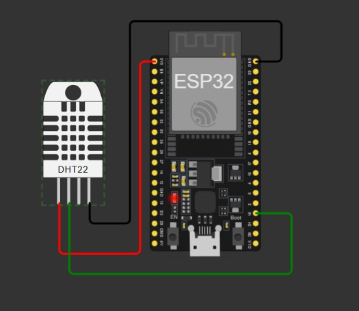
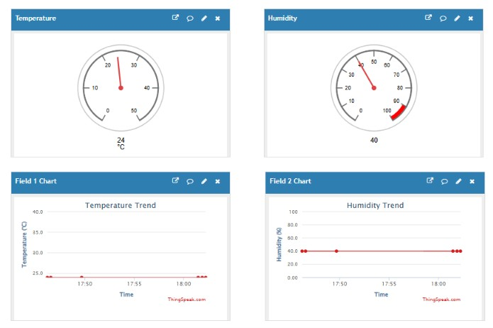

A simulated, cloud-connected environmental monitoring system featuring an ESP32, real-time ThingSpeak dashboard, and threshold-based email alerts.
Project Overview
This project demonstrates a complete sensor-to-cloud data pipeline. Due to hardware limitations, the entire physical layer is simulated using Wokwi, running a virtual ESP32 microcontroller and a DHT22 temperature/humidity sensor. The system successfully connects to a virtual Wi-Fi network and publishes environmental data via HTTP to the ThingSpeak cloud for real-time aggregation, visualization, and automated alerting.
Edge Layer
Wokwi ESP32
Simulated hardware running C++ firmware to sample DHT22 data on GPIO 15.
Network Layer
Wi-Fi & HTTP
Wokwi virtual gateway transmitting JSON payloads to REST APIs.
Cloud Layer
ThingSpeak
Dashboard visualization and backend React scripts for email alerts.
1. System Architecture
The architecture follows a standard three-tier IoT topology, engineered to function robustly in a simulated environment before physical deployment.
Sensor Node: A virtual ESP32 interfaces with a DHT22 sensor via a 1-wire protocol on GPIO 15. The firmware is written in C++ (Arduino Core) and utilizes the DHT sensor library for data extraction.
Connectivity: The ESP32 connects to the "Wokwi-GUEST" virtual access point. It utilizes the WiFiClient and HTTPClient libraries to construct POST requests.
Cloud Ingestion: ThingSpeak receives the HTTP requests using a specific Write API Key. Temperature is mapped to Field 1, and Humidity is mapped to Field 2. Updates occur at a strict 20-second interval to comply with ThingSpeak's rate limits.
2. Hardware Simulation (Wokwi)
By utilizing Wokwi, the exact C++ firmware that would run on physical silicon is compiled and executed in the browser. This allows for rigorous testing of the logic loop, Wi-Fi reconnection handling, and API integration without the friction of physical wiring or hardware failure.

3. Cloud Visualization & Alerting
The ThingSpeak platform serves as the central data hub. Two distinct workflows were established:
Live Dashboard: Incoming data streams are visualized using native gauges and line charts, providing an immediate overview of environmental trends.

Automated Email Alerts: A ThingSpeak React is configured to evaluate incoming data points against predefined safety thresholds (Temperature > 35°C, or Humidity > 80%). If a threshold is breached, a ThingHTTP action is triggered to dispatch an urgent email alert to the system administrator.
This project showcases end-to-end IoT system development, focusing on reliable data sampling, network communication protocols, and integrating cloud platforms for real-time monitoring and event-driven architectures.
The teleoperation system is modular, dividing computer vision processes from ROS 2 robot controls. The computer vision pipeline runs in an isolated Python environment to manage ML dependencies, communicating with the ROS 2 workspace via a custom message interface.
The hand tracker node publishes a custom gesture_teleoperation_interfaces/CVOutput message, containing hand tracking enable states, index fingertip coordinate offsets, and classified gesture labels.
2. Hand Landmark Preprocessing & Classification
The webcam captures a raw frame, and MediaPipe locates the coordinates of 21 hand landmarks. To make gesture classification invariant to camera distance and position, raw coordinate landmarks \(\mathbf{l}_i\) undergo normalization before classification:
Wrist Normalization: Translates the hand coordinates relative to the wrist (landmark 0) to make them translation-invariant:
A fitted StandardScaler normalizes the 63-dimensional vector (21 coordinates \(\times\) 3 dimensions) to zero-mean and unit-variance. This vector is passed to a 4-layer fully connected Neural Network (MLP) trained in PyTorch:
A softmax activation outputs logits for the three gesture classes: POINT (enable tracking), OPEN PALM (release gripper), and CLOSED FIST (close gripper). The command is executed only if the highest class probability exceeds 85%.
3. Coordinate Mapping & Velocity Control Model
Because the webcam frame and the Gazebo simulation utilize different coordinate conventions, the displacement of the hand \(\Delta\mathbf{h}\) in the camera frame is mapped to the robot base frame using a rotation matrix \(\mathbf{R}\):
Rather than mapping hand coordinates directly to absolute space (which leads to fatigue and awkward postures), this model treats hand displacement as a velocity command, functioning like a virtual joystick:
Smoothing Filter: Dual exponential moving average (EMA) filters are applied to hand positions and velocities to suppress landmark detection jitter:
\[\mathbf{h}_{\text{filtered}} \mathrel{+}= \alpha_h \cdot (\mathbf{h}_{\text{raw}} - \mathbf{h}_{\text{filtered}}), \quad \alpha_h = \frac{\Delta t}{\tau_h + \Delta t}\]
with a time constant \(\tau_h = 0.12\text{ s}\).
Response Curve: We apply a deadzone (\(d_{\text{dead}} = 0.02\)) and an exponential velocity response curve (\(\gamma = 1.6\)) to permit both fine precision adjustments near the center and rapid traverses at outer boundaries:
\[t = \min\left(\frac{|\mathbf{d}| - d_{\text{dead}}}{r_{\text{expo}}}, 1\right), \quad v = v_{\max} \cdot t^{\gamma}, \quad \mathbf{v}_{\text{target}} = \frac{\mathbf{d}}{|\mathbf{d}|} \cdot v\]
with \(v_{\max} = 0.15\text{ m/s}\) and \(r_{\text{expo}} = 0.15\text{ m}\).
4. Inverse Kinematics & Safety Clamping
The target velocity vector is integrated to yield a Cartesian coordinate target \(\mathbf{p}_{\text{cmd}}\). This target is converted to joint velocities and positions via the ikpy numerical inverse kinematics solver using the robot's URDF model.
To prevent robot damage and singularities, several layers of workspace protection are integrated directly into the controller:
Workspace Clamping: The target is clamped to a radial shell centered at the robot base. This preserves full 360° reachability while preventing the arm from exceeding its mechanical range:
\[r = |\mathbf{p} - \mathbf{p}_{\text{base}}|\]
\[r_{\text{clamped}} = \text{clamp}(r, 0.06\text{ m}, 0.30\text{ m}), \quad z_{\text{clamped}} = \text{clamp}(z, 0.02\text{ m}, 0.35\text{ m})\]
Velocity Limiting: A per-joint velocity cap prevents rapid, dangerous joint sweeps when passing near mechanical singularities:
\[\Delta\mathbf{q} = \text{clamp}(\mathbf{q}_{\text{new}} - \mathbf{q}_{\text{prev}}, -\omega_{\max} \cdot \Delta t, +\omega_{\max} \cdot \Delta t)\]
with maximum speed limit \(\omega_{\max} = 2.0\text{ rad/s}\).
Tech Stack
ROS 2 HumblePython 3.10PyTorchMediaPipeOpenCVGazeboikpy (IK)Control Systems
Project Focus
This project highlights expertise in system integration across different runtimes (ROS 2 and ML-specific PyTorch/MediaPipe environments), numerical inverse kinematics solving, computer vision pipelines, and safety-centric control system design.